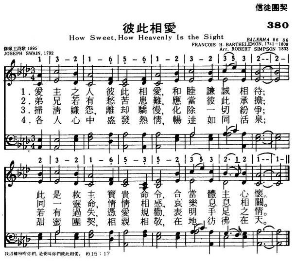

|
|
|
|
1. How sweet, how heav'nly is the sight, 2. When each can feel each brother's sigh, 3. When free from envy, scorn and pride, 4. When love, in one delightful stream 5. Love is a golden chain that binds
|
380彼此相爱
1.爱主之人彼此相爱，和睦谦诚相待，
此是救主宝贵命令，合当体主心怀。 2.兄弟若有愁苦患难，应当彼此承担， 同一灵命情情想感，哀乐息息相关。 3.扫清嫌怨离却骄慢，化除一切纷争， 若有过失凭爱相劝，表明手足之情。 4.个人心中盛发热情，畅远如同活泉。 甜蜜团契相亲相敬，在地仿佛在天。 |
|
https://www.mred365.cn/szxg/7383.html
 https://hymnary.org/hymn/NCH1929/page/238
|
|
|
|
|

-

https://www.youtube.com/watch?v=2uFy-Yi5988
LX1778
How Sweet, How Heavenly
Is The Sight
380彼此相爱
| Text: | How Sweet, How Heavenly |
| Author: | Joseph Swain |
| Tune: | BROWN |
| Composer: | William B. Bradbury |
| Short Name: | Joseph Swain |
| Full Name: | Swain, Joseph, 1761-1796 |
| Birth Year: | 1761 |
| Death Year: | 1796 |
Swain, Joseph,

was born at Birmingham in
1761, and after being apprenticed to an engraver, removed to London. After a
time he became a decided Christian, and being of an emotional poetic
temperament, began to give expression to his new thoughts and feelings in
hymns. In 1783 he was baptized by the Rev. Dr. Rippon, and in 1791 became
minister of a Baptist congregation in East Street, Walworth. After a short
but popular and very useful ministry, he died April 16, 1796 Swain published
the following:—
(1) A Collection of Poems on Several Occasions,
London, 1781; (2) Redemption, a Poem in five Books,
London, 1789; (3) Experimental Essays on Divine Subjects,
London, 1791; (4) Walworth Hymns, by J. Swain, Pastor of
the Baptist Church Meeting there, London, 1792, 129 hymns; with a Supplement,
1794, 192 hymns; (5) A Pocket Companion and Directory,
London, 1794.
| Title: | BROWN (Bradbury) |
| Composer: | William B. Bradbury (1844) |
| Meter: | 8.6.8.6 |
| Incipit: | 51231 67165 5132 |
| Key: | C Major |
| Copyright: | Public Domain |

"HOW SWEET, HOW HEAVENLY IS THE
SIGHT"
"By this shall all men know that ye are My disciples, if ye have love one to
another" (Jn. 13.35)
INTRO.:
A hymn which enumerates the blessings that come when the disciples of Christ have love for one anothers is "How Sweet, How Heavenly" (#219 in Hymns for Worship Revised and #652 in Sacred Selections for the Church). The text was written by Joseph Swaim, who was born at Birmingham, England, in 1761. Becoming an orphan in childhood, he was apprenticed to an engraver and subsequently came to London. Converted through a reading of the scriptures, he was baptized into the Baptist Church in 1783 by John Rippon. From the time of his conversion, he began to express his warm religious feelings in hymns.
Swaim’s early works include A Collection of Poems on Several Occasions of 1781, and Redemption: A Poem in Five Books of 1789. One of his best-known hymns generally that has appeared in a few of our books is "O Thou, In Whose Presence," published in his 1791 Experimental Essays on Divine Subjects in Verse and sung to a tune that is attributed to Freeman Lewis. Later that same year, Swaim became minister of the Baptist Church on East Street in Walworth, London, after having been a member of Rippon’s Carter Lane Baptist Church in Southward for a number of years.
"How Sweet, How Heavenly," originally entitled "The Grace of Christian Love," was produced in 1792 and first published in Swaim’s Walworth Hymns. His later works include the Walworth Hymns Supplement and A Pocket Companion and Directory, both from 1794. An extremely successful minister, Swaim died after a short illness in London on Apr. 14, 1796, and is buried in Bunhill Fields. The tune (Brown) was composed by William Batchelder Bradbury (1816-1868). It was first published in his 1844 book The Psalmist, where it was the setting for the hymn, "I Love to Steal Awhile Away" by Phoebe H. Brown.
Among hymnbooks published by members of the Lord’s church during the twentieth
century for use in churches of Christ, the song appeared in the 1921 Great
Songs of the Church (No. 1) and the 1937 Great
Songs of the Church No. 2 both edited by E. L. Jorgenson; the
1935 Christian
Hymns (No. 1, with the tune "Arlington" by Thomas A. Arne
usually associated with Anna L. Barbauld’s "Again the Lord of Light and Life"),
the 1948 Christian
Hymns No. 2, and the 1966 Christian
Hymns No. 3 all edited by
L. O. Sanderson; the 1963 Abiding
Hymns edited by Robert C. Welch; and the 1963 Christian
Hymnal edited by J. Nelson Slater. Today it may be found in
the 1971 Songs
of the Church, the 1990 Songs
of the Church 21st C. Ed., and the 1994 Songs
of Faith and Praise all edited by Alton H. Howard; the
1978/1983 Church
Gospel Songs and Hymns edited by V. E. Howard; the 1986 Great
Songs Revised edited by Forrest M. McCann; and the 1992 Praise
for the Lord edited by John P. Wiegand; as well as Hymns
for Worship, Sacred
Selections, and the 2007 Sacred
Songs of the Church edited by William D. Jeffcoat.
This hymn portrays the beauty of truly loving one another both here and in heaven.
I. Stanza 1 reminds us that we should delight in one another’s peace
"How sweet, how heavenly is the sight When those that love the Lord
In one another’s peace delight, And so fulfill the word."
A. First, of course, we must love the Lord: Mk. 12.30
B. Then, we must endeavor to keep the unity of the Spirit in the bond of peace:
Eph. 4.1-3
C. In doing this, we shall fulfill the word of Jesus who prayed for unity among
believers: Jn. 17.20-21
II. Stanza 2 reminds us that we should feel and bear our brother’s burdens
"When each can feel his brother’s sigh, And with him bear a part;
When sorrow flows from eye to eye, And joy from heart to heart."
A. If we truly feel our brother’s sigh, then we should strive to help him bear
his burdens: Gal. 6.2
B. This will mean weeping with those who weep: Rom. 12.15
C. It also means rejoicing with those who are honored: 1 Cor. 12.26
III. Stanza 3 reminds us that we should be willing to forbear one another’s
faults
"When, free from envy, scorn, and pride, Our wishes all above,
Each can his brother’s failings hide, And show a brother’s love."
A. We need to put away all malice, deceit, hypocrisy, envy, and evil speaking:
1 Pet. 2.1
B. The phrase, "Each can his brother’s failings hide," means not to ignore sin
but to be kind to one another and forgive one another: Eph. 4.31-32
C. The reason that we should do this is that love covers a multitude of sins: 1
Pet. 4.8
IV. Stanza 4 reminds us that we should have a love that will flow through every
bosom
"When love in one delightful stream Through every bosom flows;
When union sweet and dear esteem In every action glows."
A. Paul reminds us that love is the greatest: 1 Cor. 13.13
B. Having such a love for one another will help us understand how good and
pleasant it is for brethren to dwell together in unity: Ps. 133.1
C. However, love is not just an emotional but is something that must be
demonstrated in our actions by how we treat others: Gal. 5.13
V. Stanza 5 reminds us that we should glow with love that we might be heirs of
heaven
"Love is the golden chain that binds Our happy souls above;
And he’s an heir of heaven who finds His bosom glow with love."
A. Love truly is the golden chain that binds because it is called the bond of
perfection: Col. 3.12-14
B. All Christians certainly want to be heirs of heaven: 1 Pet. 1.3-5
C. Thus, because love is of God, those who are like God in this life and who
will live with God in eternity are those who love one another: 1 Jn. 4.7-8
CONCL.:
This little hymn has often been relegated to a closing song. It can
surely be used effectively at the conclusion of a worship service, but it is
also good to sing as an opening song, a song before prayer, or a hymn before the
sermon, especially one dealing with brotherly love. It emphasizes to us that
concerning genuine love for our brethren is "How Sweet, How Heavenly Is the
Sight."